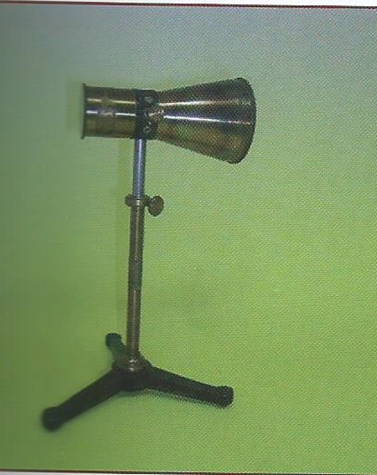

Pila termoelettrica di Melloni
Scuola di provenienza: Liceo Classico "P. Colletta", Avellino
Settore: Elettrostatica
Costruttori: Max Kohl, Chemnitz, Germania
Materiali: Ottone e materiale metallico
Accessori: Nessuno
Stato di conservazione: Buono
Descrizione: È costituita da due blocchetti di bismuto e antimonio alternati e saldati insieme: quanto maggiore il numero delle coppie bismuto-antimonio tanto più sensibile è la pila. Per esperimenti e dimostrazioni comuni, anche delicate, bastano 25 coppie: si può con una tale pila confrontare l’entità termica delle diverse radiazioni dello spettro solare, congiungendo la pila col galvanometro a specchio. Avvicinando la mano al ricettore a imbuto dell’apparecchio, o un fiammifero acceso, il galvanometro segna una corrente.